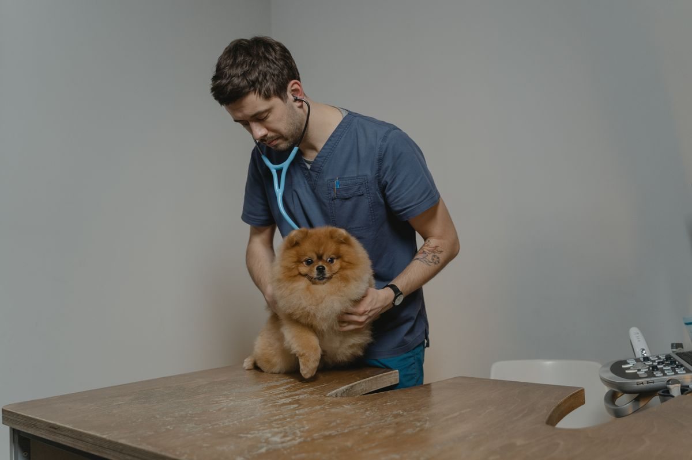
داخلی
معاینه و درمان بیماریهای داخلی سگ و گربه؛ پیگیری وضعیت حیوان شما از اولین ویزیت تا بهبودی.
بیمارستان دامپزشکی نلا (نلاپت) در جماران نیاوران — داخلی، جراحی، ارتوپدی، دندانپزشکی، فیزیوتراپی، پرندگان، گرومینگ و پانسیون، بهصورت شبانهروزی. فرم رزرو نوبت را پر کنید تا برای هماهنگی معاینه با شما تماس بگیریم.
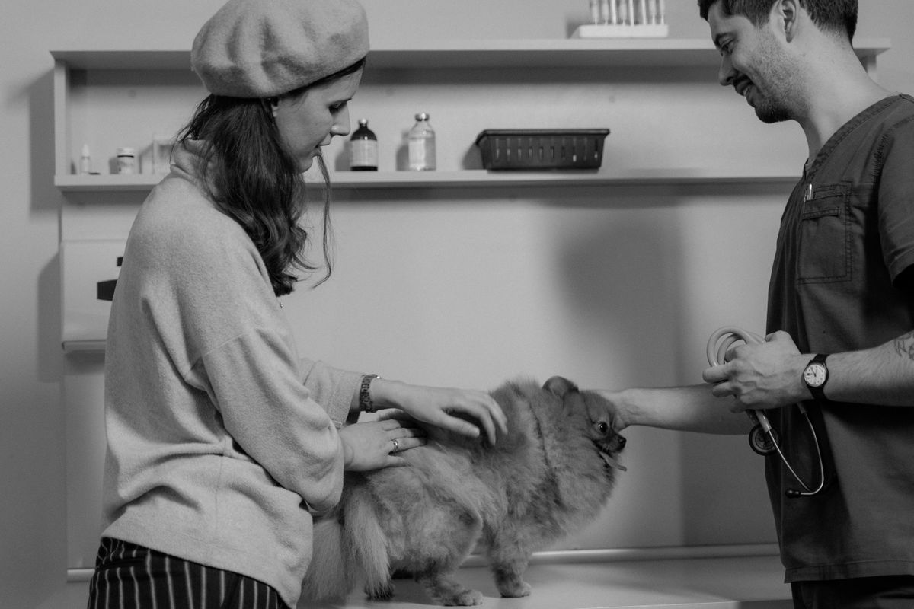
خدمات بیمارستان دامپزشکی نلا برای سگ، گربه و پرندگان؛ از معاینه داخلی تا جراحی، دندانپزشکی و فیزیوتراپی.

معاینه و درمان بیماریهای داخلی سگ و گربه؛ پیگیری وضعیت حیوان شما از اولین ویزیت تا بهبودی.
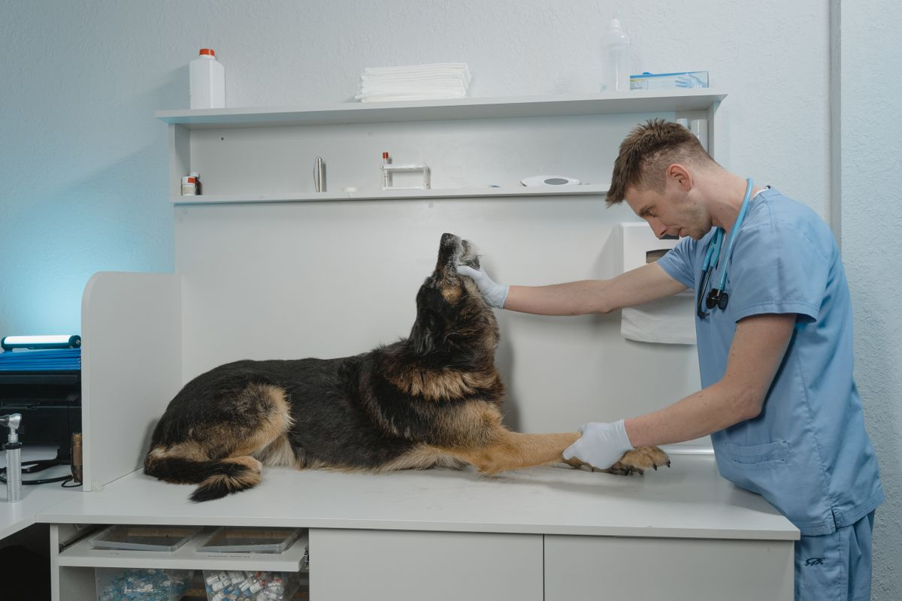
جراحیهای عمومی و تخصصی با مراقبت پیش و پس از عمل؛ تیم جراحی بیمارستان نلا کنار حیوان شماست.
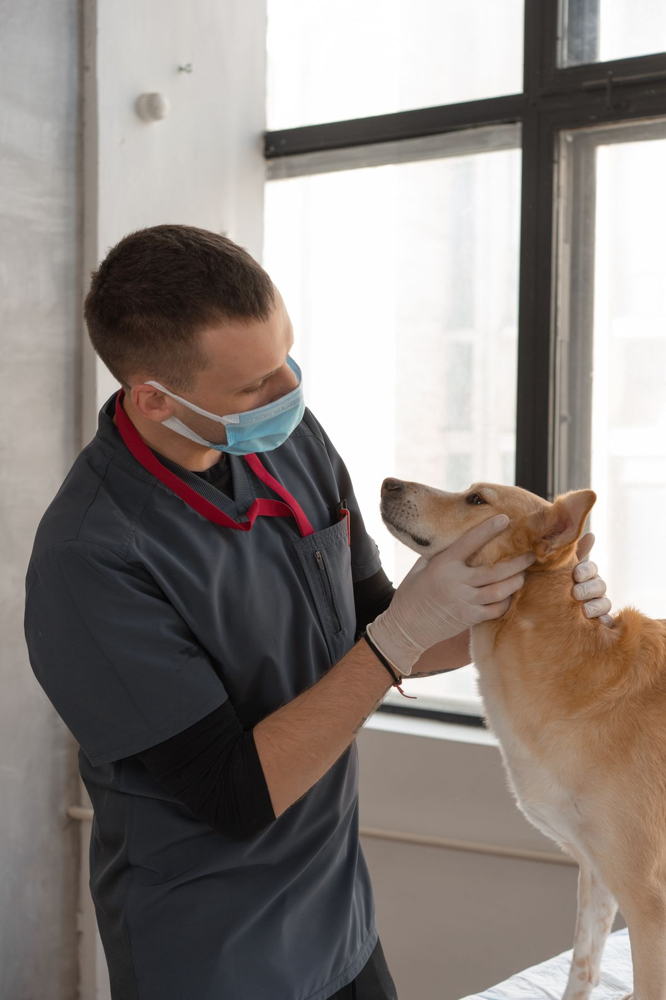
تشخیص و درمان مشکلات استخوان و مفصل؛ فیزیوتراپی و توانبخشی برای بازگشت حیوان شما به حرکت عادی.
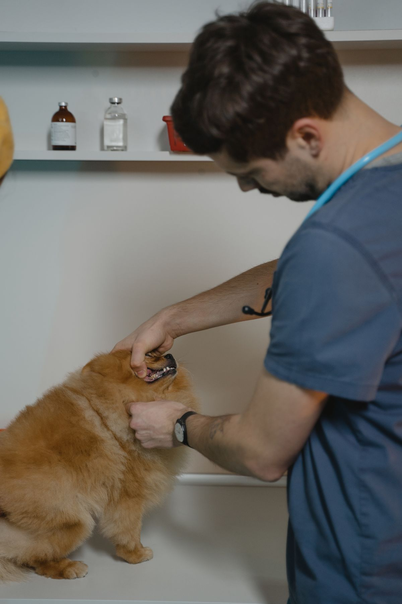
معاینه، جرمگیری و درمان دندانهای سگ و گربه؛ دندان سالم، اشتهای بهتر و زندگی راحتتر برای حیوان شما.
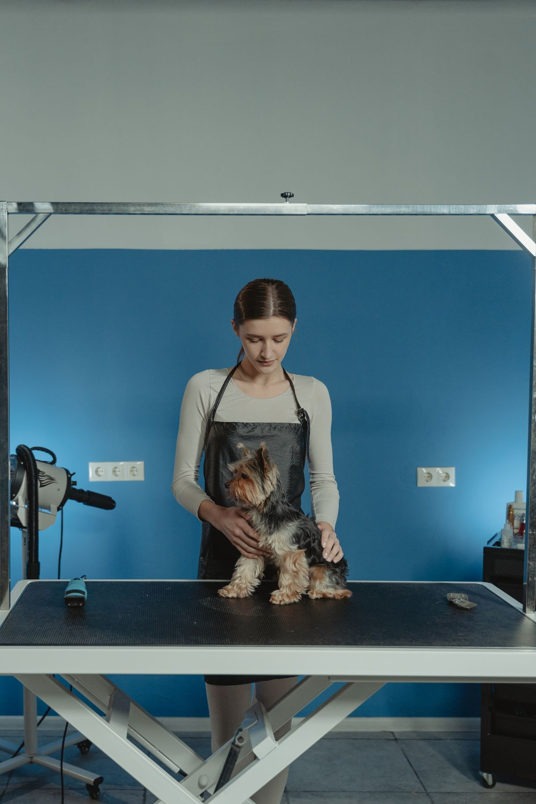
اصلاح، شستوشو و آرایش تخصصی سگ و گربه؛ حیوان شما تمیز و آراسته از بیمارستان نلا برمیگردد.
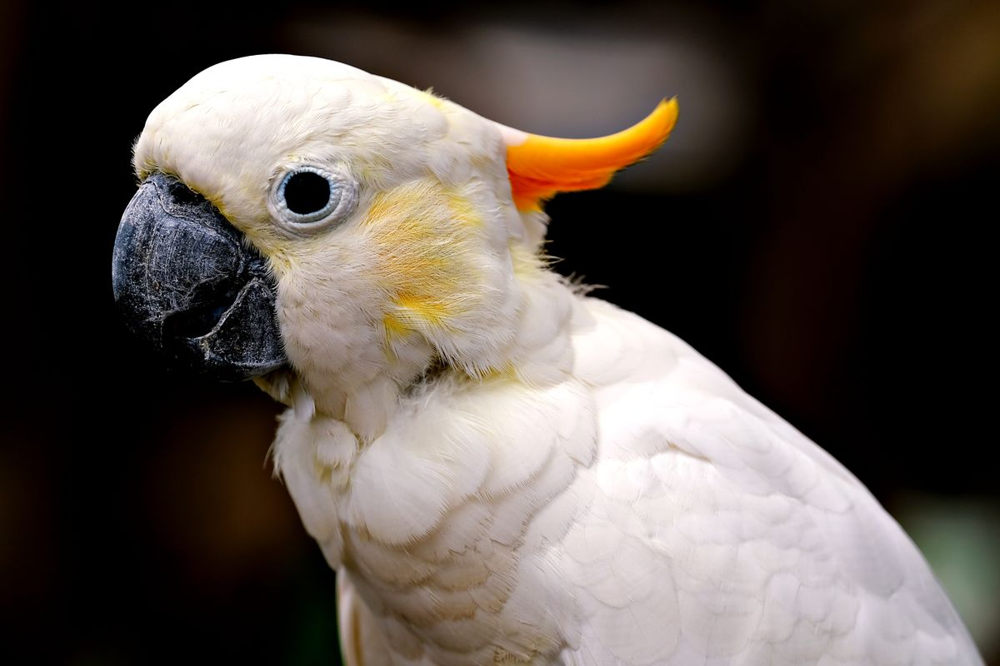
معاینه و درمان پرندگان خانگی؛ پرنده شما هم در بیمارستان نلا پزشک مخصوص خودش را دارد.

بیمارستان دامپزشکی نلا در جماران نیاوران، به مدیریت دکتر طیرانی، بهصورت شبانهروزی در خدمت حیوانات خانگی است؛ از معاینه و جراحی تا گرومینگ و پانسیون.
بیمارستان شبانهروزی است؛ اگر نیمهشب حیوان شما نیاز به کمک داشت، نلا باز است.
مدیر بیمارستان دکتر طیرانی است؛ طب سوزنی و معاینه تخصصی قلب هم در نلا انجام میشود.
اگر نمیتوانید حیوان خود را بیاورید، خدمات سیار نلا به محل شما میآید.
صفحه اینستاگرام ما @nella.pet.hospital با بیش از ۹٬۵۰۰ دنبالکننده، تازهترین خبرها و آموزشها را منتشر میکند.
بیمارستان نلا خانه دوم حیوانات خانگی نیاوران است؛ از سگ و گربه تا پرندگان.
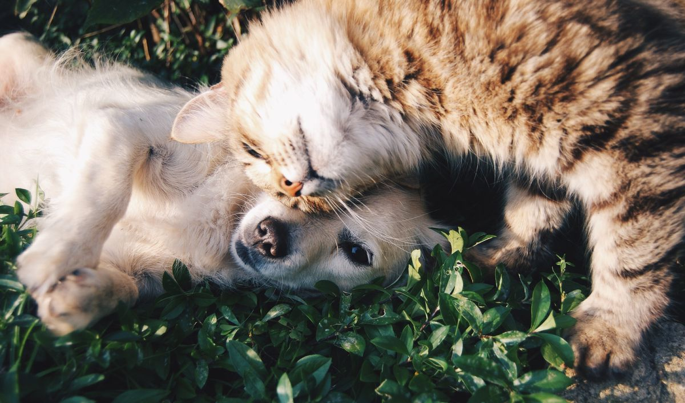
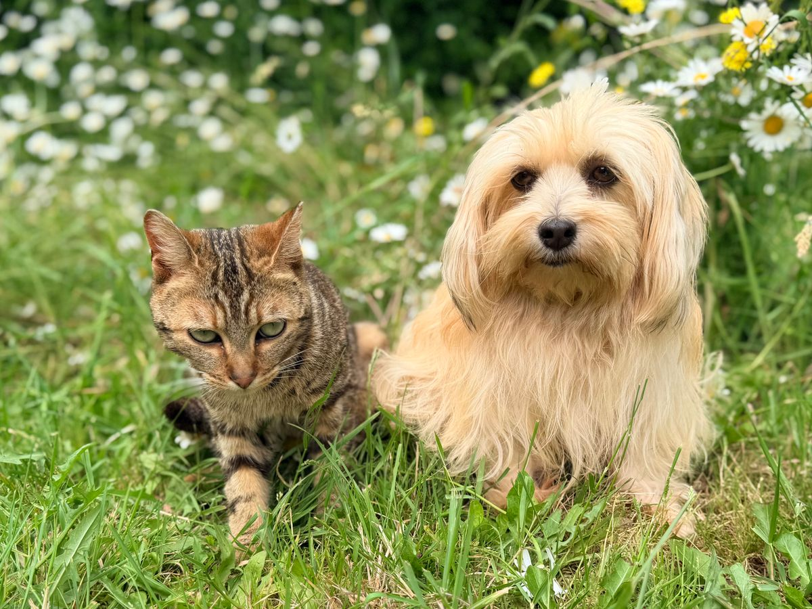
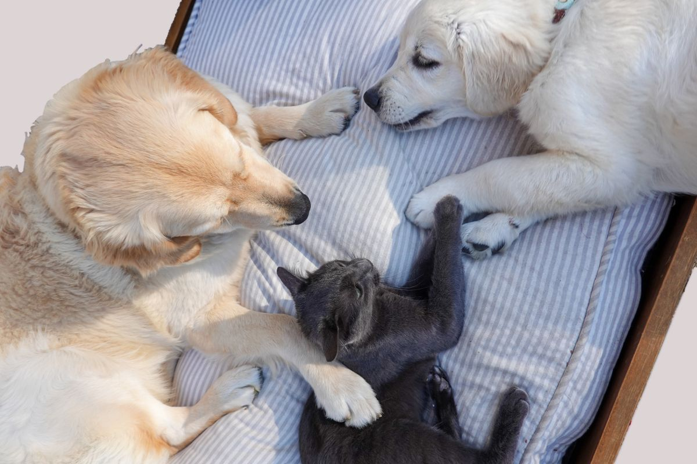
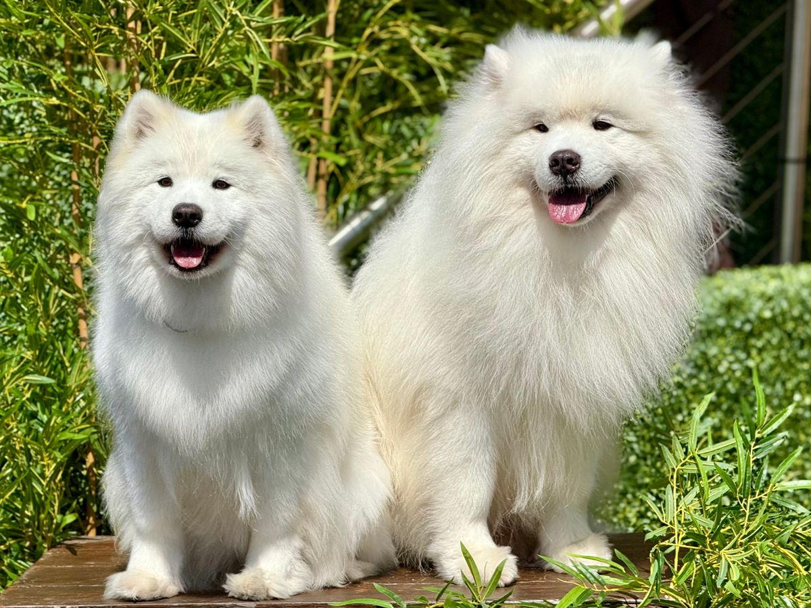
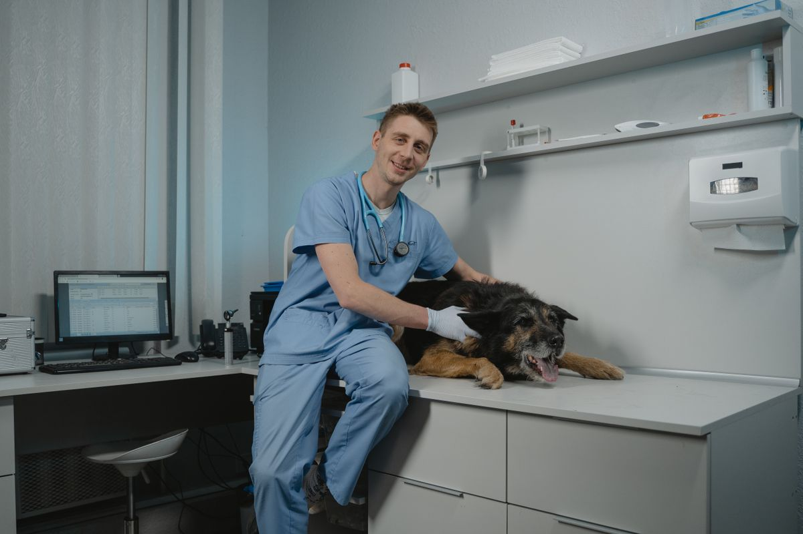
بیمارستان دامپزشکی نلا شبانهروزی است؛ برای شرایط اورژانسی، همین حالا تماس بگیرید یا از واتساپ پیام بدهید.
فرم رزرو نوبت همین صفحه را پر کنید؛ نوع حیوان و خدمت موردنیاز را انتخاب کنید.
با شما تماس میگیریم و زمان معاینه را با هم هماهنگ میکنیم.
به آدرس جماران، خیابان هاشمی، پلاک ۲ بیایید؛ حیوان شما معاینه میشود.
برنامه درمان مشخص میشود و تا بهبودی کامل حیوان شما، پیگیر وضعیتش هستیم.
فرم رزرو نوبت همین صفحه را پر کنید یا با شماره ۰۲۱۲۶۱۳۸۷۲۱ تماس بگیرید. بعد از ثبت درخواست، برای هماهنگی زمان معاینه با شما تماس میگیریم.
تهران، نیاوران، جماران، خیابان هاشمی، پلاک ۲ (نرسیده به جم سنتر).
بله؛ بیمارستان دامپزشکی نلا شبانهروزی است و در هر ساعت از شبانهروز پذیرش دارد. برای شرایط اورژانسی با ۰۹۱۲۲۹۷۱۰۶۵ تماس بگیرید.
سگ، گربه و پرندگان؛ خدمات داخلی، جراحی، ارتوپدی، دندانپزشکی، فیزیوتراپی، گرومینگ و پانسیون برای حیوانات خانگی ارائه میشود.
بله؛ کاشت میکروچیپ و صدور گواهی خروج از کشور از خدمات بیمارستان نلا است. در فرم رزرو نوبت، خدمت موردنیاز را انتخاب کنید.
فرم را پر کنید؛ برای هماهنگی زمان معاینه با شما تماس میگیریم. اگر ترجیح میدهید مستقیم صحبت کنیم، تماس بگیرید یا در واتساپ پیام بدهید:
۰۲۱ - ۲۶۱۳ ۸۷۲۱ واتساپ: ۰۹۱۲۲۹۷۱۰۶۵ اینستاگرام: @nella.pet.hospital